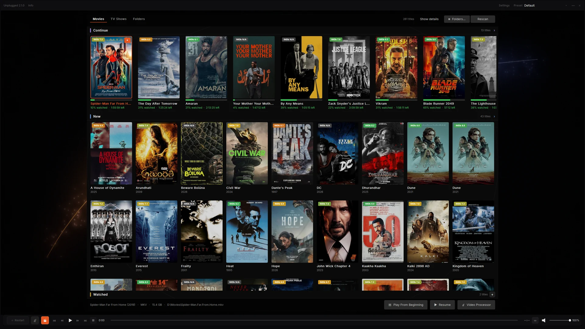

Install on your PC
One 127 MB download for Windows 10 or 11. The installer brings the runtime it needs, so there is nothing else to fetch.
Free · Open source · Home cinema video processor
Unplugged bridges the gap — scene-by-scene tone mapping, three ML models, and a picture you can actually tune. Free, open source, runs on your HTPC.
Windows 10/11 · 127 MB · No subscription · No account
“Unplugged + Zion on default settings looked better than my tuned madVR setup.†— AVS Forum user

Plug in and play
No subscription, no cloud account, no installer labyrinth. Set it up once and leave it alone.
One 127 MB download for Windows 10 or 11. The installer brings the runtime it needs, so there is nothing else to fetch.
Media Player mode needs no capture card. Open your films, choose a track and watch — MKV, MP4, HEVC and TrueHD/Atmos are handled natively.
When you want consoles, cameras or PC output, add a DeckLink card and Blackmagic's Desktop Video runtime. Unplugged locks the signal and applies the tone map and grade.
Live HDMI needs an unencrypted source and Blackmagic's free Desktop Video runtime, installed separately — Unplugged does not bundle it. Most people start with Media Player mode and add a capture card later.
One video processor, every source
An unencrypted HDMI source and a file on disk get the same tone mapping, the same picture controls and the same calibration. The only difference is where the picture comes from.
The same five stages run for live HDMI and files.
Plug an unencrypted source into the PC and Unplugged takes it from there. SDR, HDR10, HLG and Dolby Vision are recognised automatically.
Play your own films with the same renderer, the same tone mapping and the same calibration as live HDMI.
Both modes run the same picture pipeline. The difference is where the picture comes from.
| Choose your setup | Video Processor | Media Player |
|---|---|---|
| Picture source | Live HDMI from an unencrypted source | Your own MKV, MP4 and similar files |
| Capture hardware | DeckLink card + Desktop Video runtime | None |
| Best for | Consoles, cameras, PC output | Films you already own |
| Picture pipeline | Tone mapping · Zion Grade · LUT | The same pipeline |
| Setup | Pick the input once | Point it at a folder |
How Unplugged compares
The dedicated processors are mature, and they lead on turnkey hardware, latency, geometry and dealer support. Unplugged leads on learned grading, price and openness. Here is the honest split.
| Choose your setup | Unplugged | madVR Envy | Lumagen Radiance Pro |
|---|---|---|---|
| Price | Free (GPL-3.0) | From ~$5,000 (Core); Extreme higher | From ~£5,000 (4242); config-dependent |
| Tone mapping | Base curve + ML scene-by-scene correction | Per-frame dynamic tone mapping | Per-frame dynamic tone mapping |
| ML grade | Zion: 3 models, 1,700 trees | No learned grade | No learned grade |
| NLS | Dual-axis, split, centre protection | NLS+ dual-axis | NLS |
| Open source | GPL-3.0 | Closed | Closed |
| Calibration | DisplayCAL .cube final pass | 3D LUT calibration | CMS + 3D LUT |
| Hardware | Windows HTPC + DeckLink for live HDMI | Dedicated box, NVIDIA GPU | Dedicated FPGA box |
| Best at | Price, openness, learned grade | Turnkey setup, dedicated latency, geometry tools | Turnkey setup, auto aspect, CMS depth |
Competitor information is indicative as of November 2026; prices and features are dealer- and region-dependent. Verify with the vendor. madVR Envy and Lumagen Radiance Pro are trademarks of their respective owners; unplugged is not affiliated.
Dynamic tone mapping
HDR is mastered for a cinema screen. Unplugged maps it, scene by scene, to the brightness and black level your projector or TV actually has — so you see the detail instead of clipped whites and crushed shadows.
Every scene is measured and mapped for your display. Skies keep their gradient, shadows keep their texture, and bright highlights roll off instead of clipping.
Unplugged uses a Hable filmic roll-off: highlights compress instead of clipping, and Dolby Vision is handled by default. GT7 Adapt reads the title's own peak brightness for a second flavour. Pick one, or A/B them live.
Exposure, shadow detail and contrast. Every slider starts neutral — move it only when you want to, and a look you like stays put.
Tell Unplugged your screen's measured brightness and black level once. Every film is then mapped into the range your projector or TV can actually show.
Load a DisplayCAL .cube as a final polish. Use the enable toggle to compare it without unloading the file.
Deband smooths the steps in skies and dark walls. Adaptive sharpen adds detail without white halos. Both stay out of the way of the film.
The Zion Grade
The Zion Grade uses three real-time machine-learning models to read every frame and decide how shadow, mid-tone and highlight should be shaped. Where a traditional processor sets a curve once per title, Zion shifts the balance scene by scene — a dark interior followed by a bright exterior gets a different grade, automatically.
3 models · 1,700 trees · 88 features per frame · metadata-free model inference
Live HDMI
Unplugged handles the handshake, the format changes and the odd unplugged cable. Your unencrypted HDMI source just works.
Scope screens and projectors
A 2.39:1 film on your 16:9 screen wastes 25% of the picture area on black. Crop alone loses the edges. Stretch alone distorts faces. Unplugged splits the correction across both axes — the same dual-axis approach found in high-end video processors.
Free and open source
Unplugged is an open research project and GPL-3.0 software. Download it, install it, keep it. The source is public, so you can see exactly what your picture is doing.
Unplugged began as an open research project on the Windows HTPC: how much of a colorist's grade can be learned from the image itself? It is maintained in public by spedagadi. Questions, build logs and bug reports are welcome in the issue tracker.
Built in public
Unplugged is new, so there is no decade of awards to show. There is source code, a release history and a reference rig you can inspect.
Counts from GitHub on 4 November 2026. See every release on GitHub →
The bigger picture
Unplugged is an open research project with a simple question: if a modern 4K chip can run dynamic tone mapping, an ML grade and full playback at once, why should a video processor cost what it does?
The reference implementation: live HDMI, media player, the Zion Grade and calibration on Windows 10 or 11.
A standalone ARM board with HDMI input — the same pipeline in a small box, with no PC in the chain.
A standalone COM wrapper for the grade engine, so third-party DirectX players can call it without the full filter.
Roadmap items are future work, not shipped features.
Before you install
Questions
Yes. The application is GPL-3.0, the download is the installer, and there is no account, subscription or licence key. The source for the application, renderer, LAV fork and FFmpeg capture path is public on GitHub.
Only for live HDMI. Movie playback works without a capture card. Live use needs a Blackmagic DeckLink input, with the PC's graphics output going to your projector or TV.
Yes. Unplugged plays your movie library with the same tone mapping, picture controls and calibration as live HDMI. No capture card is needed for file playback.
Any display that accepts a standard HDMI signal. The normal pipeline outputs BT.709 SDR — set the display target to your measured white, peak and black. HDR passthrough is a debug option, not the default.
It depends on the source, display and tuning, so we do not claim a universal win. The difference is the mechanism: Zion predicts a colorist-style correction per scene from 88 features, while a traditional processor applies a fixed curve. Use the passthrough toggles and judge on your own content; the AVS Forum quote above is one user's comparison.
Envy is a mature dedicated box. It leads on turnkey setup, dedicated-hardware latency, geometry and lens-memory integration. Unplugged is free, open source, runs on a PC, and adds the learned Zion grade. See the comparison table.
Dolby Vision over HDMI is recognised as its own case rather than falling back to SDR, and its scene-by-scene metadata feeds the tone curve. Dolby Vision in files (profile 5) is not supported in media player mode.
Leave Unplugged selected for everything, including Dolby Vision; it is the default per source. Choose GT7 Adapt manually for HDR10 or HLG when you want the title's own peak brightness to shape the highlights.
No. The picture pipeline is local. Once a day the app can ask GitHub whether a newer release exists and show a card if one does. It notifies only, and the check can be turned off in System → App.
Yes. Load a DisplayCAL .cube and it is applied as the final pass, separate from the tone mapping. An enable toggle compares it without unloading the file.
No. Unplugged does not decrypt, strip or bypass HDCP or any other content protection. DeckLink inputs accept unencrypted HDMI only. Commercial disc and streaming content is typically protected and is not supported.
No. It does not decrypt, strip or bypass HDCP or any other content protection, and it includes no keys or bypass features. It works only with unencrypted signals the source already provides, and only with content you are authorized to access. See content protection.
Yes for live HDMI. Install the latest Desktop Video runtime from Blackmagic's support portal first. Unplugged does not bundle Blackmagic's proprietary runtime.
Download
Version 2.1.0 · 127 MB · Windows 10/11 x64. Install, plug in, press play. Set your screen once and leave it.
New in 2.1.0: set-and-forget NLS, a more reliable library, and a one-click diagnostics report.
SHA-256 is listed on the download page and in the release notes.
| Version | 2.1.0 |
|---|---|
| Released | 4 November 2026 |
| Installer | Unplugged-setup-2.1.0.exe |
| Size | 127,087,675 bytes |
| Platform | Windows 10/11 x64 |
| Licence | GPL-3.0 |
| Price | Free |